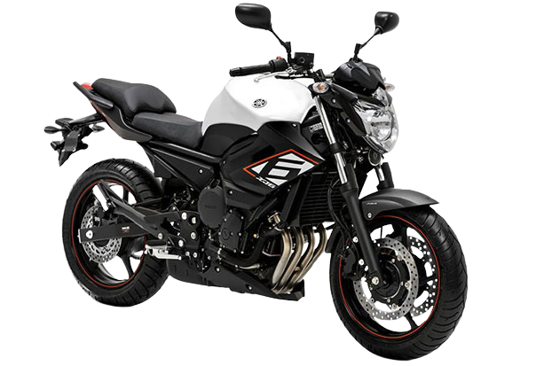

A Yamaha XT660 é um motocicleta de dupla finalidade,
on / off-road, lançada pela Yamaha Motors como uma
substituta para a XT600.
R$ 31.990,00
XJ6-N

descrição
Design esportivo, desempenho empolgante e agilidade total,
Torque e potência linear do motor de 4 cilindros, 600cc
Perfeita para o dia a dia ou viagens.
R$ 33.990,00
Hornet
descrição
A Hornet traz um motor de quatro cilindros em linha com
599 cm³ de capacidade. Tem linhas discretas e boa maneabilidade,
além de ser fácil de conduzir. O propulsor possui duplo comando
no cabeçote (DOHC) e refrigeração líquida. Produz 96,5 cv de
potência máxima a 12.000 rpm e torque de 6,43 kgf.m a 9.500 rpm.